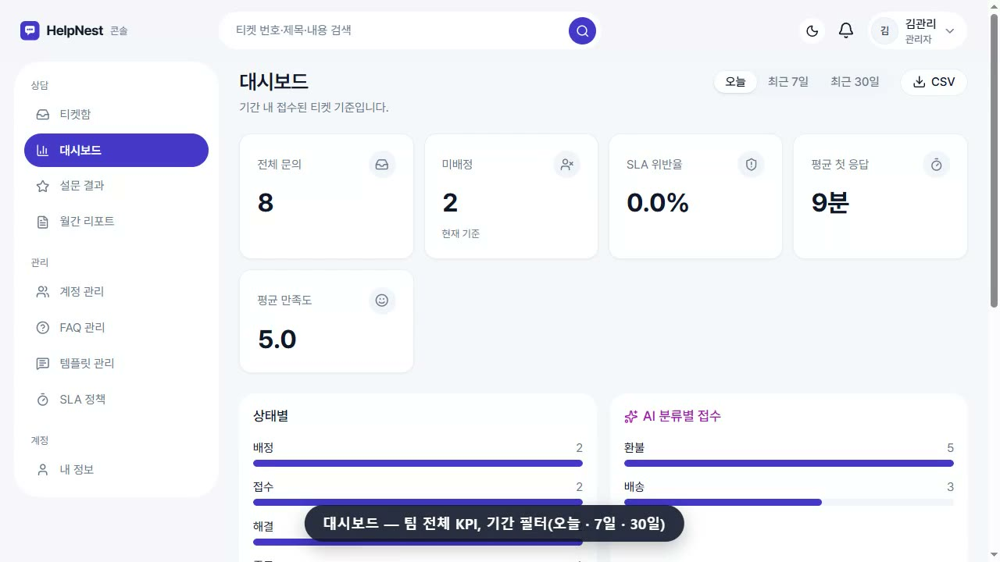

팀 프로젝트 두 번과 개인 프로젝트 하나에서 인증 · 인가와 회원 도메인을 맡아 왔습니다. 코드를 쓰기 전에 저장소 구조와 협업 규칙부터 정하는 편입니다.
처음 보는 문제도 공식 문서와 로그를 끝까지 따라갑니다. CloudFront 뒤에서 요청 제한이 실제 IP를 못 보던 문제를 X-Forwarded-For가 붙는 순서부터 추적해 팀원과 함께 풀었습니다.
MSA · Spring Cloud Gateway · Redis 인증을 BooksCamp 기간 안에 처음 익혀 8인 팀의 회원 · 인증 도메인 전체를 맡았습니다.
HelpNest 저장소 3개와 브랜치 전략 · CODEOWNERS · 협업 규칙을 직접 만들고, 팀원 전원이 Claude Code를 같은 공용 설정으로 쓰도록 맞췄습니다.
프로젝트마다 기간 · 인원 · 맡은 역할 · 기술을 먼저 적고, 제가 직접 구현한 내용을 정리했습니다.

@RequiredRole AOP로 인가Client → Gateway JWT 검증 → X-User-Role → API @RequiredRole (AOP) → 만료 시 POST /reissue → Redis Refresh 비교 · 회전
pg_trgm GIN 인덱스로 약국 · 약품 이름 검색CREATE INDEX idx_drug_display_name_trgm ON drug USING gin (display_name gin_trgm_ops);
스크롤하면 다음 문제가 앞 카드를 덮으며 올라옵니다. 모두 제가 직접 맡아 해결한 문제입니다.
Access는 메모리, Refresh는 httpOnly 쿠키 + 해시 저장 · 회전. REST를 Next 프록시로 받아 쿠키를 같은 도메인에 둡니다.
return ResponseCookie.from(REFRESH_COOKIE, value)
.httpOnly(true)
.secure(jwtProperties.refreshCookieSecure())
.sameSite("Lax")
.path("/")
.maxAge(maxAge)
.build();제공자가 본인 확인한 이메일만 연결하고, 미인증 계정에 붙을 땐 그 계정의 비밀번호 · 세션을 지웁니다. 직원 계정은 거부.
if (!StringUtils.hasText(profile.email()) || !profile.emailVerified()) {
throw new BusinessException(AuthErrorCode.OAUTH_EMAIL_REQUIRED);
}
// 직원 계정은 소셜로 들어오지 못하게
if (existing.filter(m -> m.getRole() != MemberRole.CUSTOMER).isPresent()) {
throw new BusinessException(AuthErrorCode.OAUTH_STAFF_NOT_ALLOWED);
}JWT 검증은 Gateway 한 곳에서 하고 회원 ID · 권한을 헤더로 넘겨, API는 @RequiredRole 로 권한만 봅니다. Refresh Token은 Redis에 하나만 두고 재발급마다 바꾸며, Redis 값과 다르면 탈취로 보고 세션을 지웁니다.
String tokenInRedis =
refreshTokenRepository.findByMemberId(userKey);
// … 로그아웃해서 Redis 에 없으면 401
if (!tokenInRedis.equals(refreshToken)) {
log.warn("Refresh token mismatch (possible token theft). Key: {}",
userKey);
refreshTokenRepository.deleteByMemberId(userKey);
return new ResponseEntity<>("Refresh token mismatch",
HttpStatus.UNAUTHORIZED);
}공공데이터를 Python으로 시드 SQL로 바꿔 넣고, 부분 일치 검색은 pg_trgm GIN 인덱스로 처리했습니다. LIKE '%타이레놀%' 도 인덱스를 탑니다.
CREATE EXTENSION IF NOT EXISTS pg_trgm;
CREATE INDEX idx_pharmacy_name_trgm
ON pharmacy USING gin (name gin_trgm_ops);
CREATE INDEX idx_drug_display_name_trgm
ON drug USING gin (display_name gin_trgm_ops);